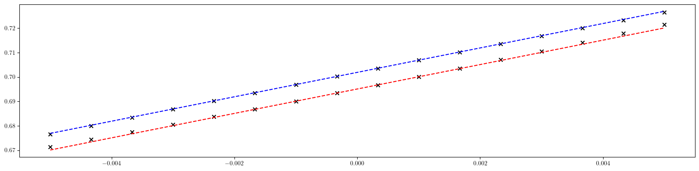
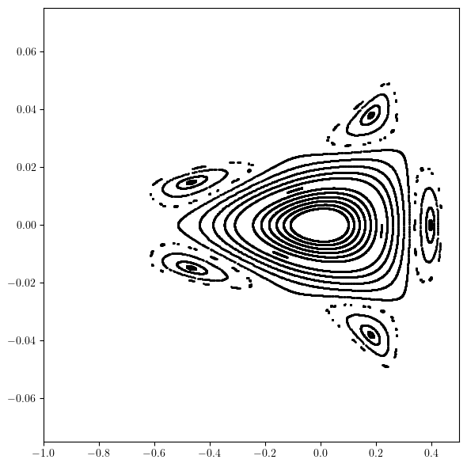
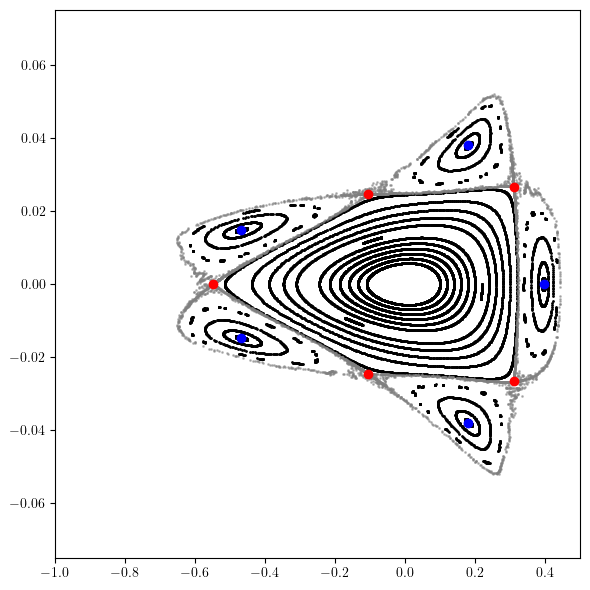

Example-29: Orbit (fixed point computation)
[1]:
# In this example computation of fixed points is illustrated
# Fixed points are computed for given initial guess using Newton root search method
# Closed orbit is computed, which is special case of period one stable (elliptic) fixed point corresponding to center manifold
# Also, period five fixed point is computed (restricted to horizontal plane)
[2]:
# Import
import torch
torch.set_printoptions(linewidth=128)
import matplotlib
from matplotlib import pyplot as plt
matplotlib.rcParams['text.usetex'] = True
from twiss import twiss
from ndmap.signature import chop
from ndmap.evaluate import evaluate
from ndmap.pfp import parametric_fixed_point
from ndmap.pfp import clean_point
from ndmap.pfp import chain_point
from ndmap.pfp import matrix
from model.library.drift import Drift
from model.library.quadrupole import Quadrupole
from model.library.sextupole import Sextupole
from model.library.dipole import Dipole
from model.library.line import Line
from model.command.wrapper import group
from model.command.orbit import orbit
[3]:
# Define simple FODO based lattice using nested lines
DR = Drift('DR', 0.25)
BM = Dipole('BM', 3.50, torch.pi/4.0)
QF_A = Quadrupole('QF_A', 0.5, +0.20)
QD_A = Quadrupole('QD_A', 0.5, -0.19)
QF_B = Quadrupole('QF_B', 0.5, +0.20)
QD_B = Quadrupole('QD_B', 0.5, -0.19)
QF_C = Quadrupole('QF_C', 0.5, +0.20)
QD_C = Quadrupole('QD_C', 0.5, -0.19)
QF_D = Quadrupole('QF_D', 0.5, +0.20)
QD_D = Quadrupole('QD_D', 0.5, -0.19)
SF_A = Sextupole('SF_A', 0.25, 0.00)
SD_A = Sextupole('SD_A', 0.25, 0.00)
SF_B = Sextupole('SF_B', 0.25, 0.00)
SD_B = Sextupole('SD_B', 0.25, 0.00)
SF_C = Sextupole('SF_C', 0.25, 0.00)
SD_C = Sextupole('SD_C', 0.25, 0.00)
SF_D = Sextupole('SF_D', 0.25, 0.00)
SD_D = Sextupole('SD_D', 0.25, 0.00)
FODO_A = Line('FODO_A', [QF_A, DR, SF_A, DR, BM, DR, SD_A, DR, QD_A, QD_A, DR, SD_A, DR, BM, DR, SF_A, DR, QF_A], propagate=True, dp=0.0, exact=False, output=False, matrix=False)
FODO_B = Line('FODO_B', [QF_B, DR, SF_B, DR, BM, DR, SD_B, DR, QD_B, QD_B, DR, SD_B, DR, BM, DR, SF_B, DR, QF_B], propagate=True, dp=0.0, exact=False, output=False, matrix=False)
FODO_C = Line('FODO_C', [QF_C, DR, SF_C, DR, BM, DR, SD_C, DR, QD_C, QD_C, DR, SD_C, DR, BM, DR, SF_C, DR, QF_C], propagate=True, dp=0.0, exact=False, output=False, matrix=False)
FODO_D = Line('FODO_D', [QF_D, DR, SF_D, DR, BM, DR, SD_D, DR, QD_D, QD_D, DR, SD_D, DR, BM, DR, SF_D, DR, QF_D], propagate=True, dp=0.0, exact=False, output=False, matrix=False)
RING = Line('RING', [FODO_A, FODO_B, FODO_C, FODO_D], propagate=True, dp=0.0, exact=False, output=False, matrix=False)
[4]:
# Correct chromaticity
# Set parametric mapping
ring, *_ = group(RING, 'FODO_A', 'FODO_D', ('ms', ['Sextupole'], None, None), ('dp', None, None, None), root=True, alignment=False)
# Set deviation parameters
fp = torch.tensor(4*[0.0], dtype=torch.float64)
dp = torch.tensor([0.0], dtype=torch.float64)
ms = torch.tensor(8*[0.0], dtype=torch.float64)
# Compute first order parametric fixed point with respect to momentum deviation
pfp, *_ = parametric_fixed_point((0, 1), fp, [ms, dp], ring)
chop(pfp)
# Define ring around fixed point
def mapping(state, ms, dp):
return ring(state + evaluate(pfp, [ms, dp]), ms, dp) - evaluate(pfp, [ms, dp])
# Tune
def tune(ms, dp):
matrix = torch.func.jacrev(mapping)(fp, ms, dp)
tunes, *_ = twiss(matrix)
return tunes
# Chromaticity
def chromaticity(ms):
return torch.func.jacrev(tune, 1)(ms, dp)
# Initial chomaticity values
psix, psiy = chromaticity(ms).squeeze()
# Define target chomaticity values
psix_target = torch.tensor(5.0, dtype=torch.float64)
psiy_target = torch.tensor(5.0, dtype=torch.float64)
# Perform correction
dpsix = psix - psix_target
dpsiy = psiy - psiy_target
# Set solution
solution = - torch.linalg.pinv((torch.func.jacrev(chromaticity)(ms)).squeeze()) @ torch.stack([dpsix, dpsiy])
# Set sextupoles
# Note, ring function in not effected
SF_A.ms, SD_A.ms, SF_B.ms, SD_B.ms, SF_C.ms, SD_C.ms, SF_D.ms, SD_D.ms = solution.tolist()
# Check chromaticity
print(chromaticity(solution).squeeze())
# Plot tunes vs momentum deviation
nux, nuy = tune(solution, dp)
dps = torch.linspace(-5.0E-3, 5.0E-3, 16, dtype=torch.float64)
nuxs, nuys = torch.stack([tune(solution, dp) for dp in dps.reshape(-1, 1)]).T
plt.figure(figsize=(16, 4))
plt.plot(dps.cpu().numpy(), (nux + psix_target*dps).cpu().numpy(), color='red', linestyle='dashed')
plt.scatter(dps.cpu().numpy(), nuxs.cpu().numpy(), color='black', marker='x')
plt.plot(dps.cpu().numpy(), (nuy + psiy_target*dps).cpu().numpy(), color='blue', linestyle='dashed')
plt.scatter(dps.cpu().numpy(), nuys.cpu().numpy(), color='black', marker='x')
plt.tight_layout()
plt.show()
tensor([5.0000, 5.0000], dtype=torch.float64)

[5]:
# Generate and plot phase space trajectories
qx = torch.linspace(0.10, 0.4, 16, dtype=torch.float64)
px = torch.zeros_like(qx)
qy = torch.zeros_like(qx)
py = torch.zeros_like(qx)
state = torch.stack([qx, px, qy, py]).T
trjs = []
for _ in range(2**10):
state = torch.vmap(RING)(state)
trjs.append(state)
qx, px, *_ = torch.stack(trjs).swapaxes(0, -1)
plt.figure(figsize=(6, 6))
plt.scatter(qx.cpu().numpy(), px.cpu().numpy(), s=1, color='black')
plt.xlim(-1.0, 0.5)
plt.ylim(-0.075, 0.075)
plt.tight_layout()
plt.show()

[6]:
# Compute closed orbit (period one fixed point)
# Set initial guess
guess = 1.0E-3*torch.tensor([1.0, -1.0, 1.0, -1.0], dtype=torch.float64)
# Compute without deviation parameters and groups
point, table = orbit(RING, guess, [], limit=8, epsilon=1.0E-6)
print(table)
print(point)
print(RING(point))
print()
# Compute matrix around closed orbit
print(torch.func.jacrev(RING)(point))
print()
print(matrix(1, ring, point, ms, dp, jacobian=torch.func.jacrev))
print()
# Classify fixed point
values, _ = torch.linalg.eig(matrix(1, ring, point, ms, dp, jacobian=torch.func.jacrev))
print(values.log().real)
print()
# Deviation parameters are passed after the initial guess, followed by deviation groups
point, table = orbit(RING, guess, [ms, dp], ('ms', ['Sextupole'], None, None), ('dp', None, None, None), limit=8, epsilon=1.0E-6)
print(table)
print(point)
print(RING(point))
print()
# Track closed orbit
# Note, number of points is equal to the number of lines plus one (full=True, default) or number of lines (full=False)
points, table = orbit(RING, guess, [ms, dp], ('ms', ['Sextupole'], None, None), ('dp', None, None, None), advance=True, limit=8, epsilon=1.0E-6)
print(table)
print(points)
print(points.shape)
print(len(RING))
print()
# Closed orbit with non-zero deviation parameters
# Note, alignment flag should be explicitly passed
fp = torch.tensor(4*[0.0], dtype=torch.float64)
dx = torch.tensor([-0.001], dtype=torch.float64)
dy = torch.tensor([+0.001], dtype=torch.float64)
dp = torch.tensor([0.0005], dtype=torch.float64)
ring, *_ = group(RING, 'FODO_A', 'FODO_D', ('dx', None, ['QD_A'], None), ('dy', None, ['QD_A'], None), ('dp', None, None, None), root=True, alignment=True)
print(fp)
print(ring(fp, dx, dy, dp))
print()
point, _ = orbit(RING, guess, [dx, dy, dp], ('dx', None, ['QD_A'], None), ('dy', None, ['QD_A'], None), ('dp', None, None, None), alignment=True, limit=8, epsilon=1.0E-6)
print(point)
print(ring(point, dx, dy, dp))
print()
[]
tensor([ 2.9857e-18, -2.0620e-19, -2.9122e-19, -3.0706e-20], dtype=torch.float64)
tensor([ 2.6010e-18, 2.2073e-19, 2.7221e-19, -3.4789e-20], dtype=torch.float64)
tensor([[-3.3823e-01, -1.7512e+01, 4.0542e-19, 7.6920e-18],
[ 5.0572e-02, -3.3823e-01, -7.0284e-20, 1.3939e-19],
[-1.4957e-19, -8.2174e-18, -2.9764e-01, -6.0422e+00],
[ 6.4815e-20, -4.3138e-19, 1.5084e-01, -2.9764e-01]], dtype=torch.float64)
tensor([[-3.3823e-01, -1.7512e+01, -3.8455e-33, -5.8351e-32],
[ 5.0572e-02, -3.3823e-01, 4.9958e-34, -5.6691e-34],
[ 7.8130e-34, 5.7800e-32, -2.9764e-01, -6.0422e+00],
[-4.8163e-34, 4.4705e-33, 1.5084e-01, -2.9764e-01]], dtype=torch.float64)
tensor([-1.6398e-15, -1.6398e-15, -1.2069e-16, -1.2069e-16], dtype=torch.float64)
[(None, ['SF_A', 'SD_A', 'SF_B', 'SD_B', 'SF_C', 'SD_C', 'SF_D', 'SD_D'], 'ms'), (None, None, 'dp')]
tensor([ 2.9857e-18, -2.0620e-19, -2.9123e-19, -3.0706e-20], dtype=torch.float64)
tensor([ 2.6010e-18, 2.2073e-19, 2.7221e-19, -3.4789e-20], dtype=torch.float64)
[(None, ['SF_A', 'SD_A', 'SF_B', 'SD_B', 'SF_C', 'SD_C', 'SF_D', 'SD_D'], 'ms'), (None, None, 'dp')]
tensor([[ 2.9857e-18, -2.0620e-19, -2.9123e-19, -3.0706e-20],
[-4.4180e-18, 1.0905e-19, -3.0486e-19, 2.7202e-20],
[ 4.8561e-18, 1.2635e-20, 1.6041e-20, 5.5260e-20],
[-4.2013e-18, -1.3148e-19, 3.1934e-19, 2.2679e-20],
[ 2.6010e-18, 2.2073e-19, 2.7221e-19, -3.4789e-20]], dtype=torch.float64)
torch.Size([5, 4])
4
tensor([0., 0., 0., 0.], dtype=torch.float64)
tensor([ 0.0030, -0.0002, -0.0014, -0.0003], dtype=torch.float64)
tensor([ 2.5908e-03, -2.2607e-05, -1.1890e-04, -2.1272e-04], dtype=torch.float64)
tensor([ 2.5908e-03, -2.2607e-05, -1.1890e-04, -2.1272e-04], dtype=torch.float64)
[7]:
# Locate period five fixed points
dp = torch.tensor([0.0], dtype=torch.float64)
ms = torch.tensor(8*[0.0], dtype=torch.float64)
# Set fixed point period
power = 5
# Set tolerance epsilon
epsilon = 1.0E-9
# Set random initial points
qx = 1.0*torch.rand(256, dtype=torch.float64) - 0.50
px = 0.1*torch.rand(256, dtype=torch.float64) - 0.05
qy = torch.zeros_like(qx)
py = torch.zeros_like(px)
points = torch.stack([qx, px, qy, py]).T
def task(guess):
point, _ = orbit(RING,
guess,
[ms, dp],
('ms', ['Sextupole'], None, None),
('dp', None, None, None),
limit=128,
power=power,
epsilon=None)
return point
# Perform root search iterations for each initial point
points = torch.func.vmap(task)(points)
# Set parametric ring
ring, *_ = group(RING, 'FODO_A', 'FODO_D', ('ms', ['Sextupole'], None, None), ('dp', None, None, None), root=True, alignment=True)
# Iterate
for _ in range(128):
locals = torch.vmap(lambda state: ring(state, ms, dp))(points)
# Remove solutions with large norms
points = points[locals.norm(1, dim=-1) < 0.5]
# Remove unconverged solutions
mask = []
for point in points:
local = point.clone()
for _ in range(power):
local = ring(local, ms, dp)
mask.append((local - point).norm() < epsilon)
points = points[mask]
# Clean points (remove nans, duplicates, points from the same chain)
points = clean_point(power, ring, points, ms, dp, epsilon=epsilon)
# Generate fixed point chains
chains = torch.func.vmap(lambda point: chain_point(power, ring, point, ms, dp))(points)
# Classify fixed point chains (elliptic vs hyperbolic)
# Generate initials for hyperbolic fixed points using corresponding eigenvectors
kinds = []
for chain in chains:
point, *_ = chain
values, vectors = torch.linalg.eig(matrix(power, ring, point, ms, dp))
kind = values.log().real.prod() < epsilon
kinds.append(bool(kind))
if not kind:
lines = [point + vector*torch.linspace(-epsilon, +epsilon, 128, dtype=torch.float64).reshape(-1, 1) for vector in vectors.real.T]
lines = torch.stack(lines).reshape(-1, 4)
# Remove vertical plane in chains
qx, px, *_ = chains.swapaxes(0, -1)
chains = torch.stack([qx, px]).swapaxes(0, -1)
# Iterate lines and remove vertical plane
manifold = []
for _ in range(64):
manifold.append(lines)
lines = torch.func.vmap(lambda point: ring(point, ms, dp))(lines)
manifold = torch.stack(manifold)
# Remove vertical plane in lines (including nonlinear leaking)
qx, px, qy, py = manifold.swapaxes(0, -1)
qx = qx[qy.abs() + py.abs() < epsilon]
px = px[qy.abs() + py.abs() < epsilon]
manifold = torch.stack([qx, px])
# Plot
plt.figure(figsize=(6, 6))
qx, px, *_ = torch.stack(trjs).swapaxes(0, -1)
plt.scatter(qx.cpu().numpy(), px.cpu().numpy(), s=1, color='black')
qx, px = manifold
plt.scatter(qx.flatten().cpu().numpy(), px.flatten().cpu().numpy(), s=1, color='grey', alpha=0.5)
for chain, kind in zip(chains, kinds):
plt.scatter(*chain.T, color = {True:'blue', False:'red'}[kind], marker='o')
plt.xlim(-1.0, 0.5)
plt.ylim(-0.075, 0.075)
plt.tight_layout()
plt.show()
